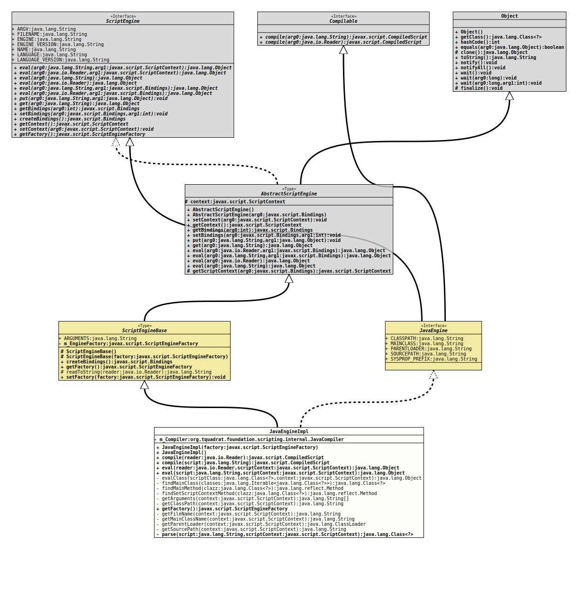

Class JavaEngineImpl
java.lang.Object
javax.script.AbstractScriptEngine
org.tquadrat.foundation.scripting.spi.ScriptEngineBase
org.tquadrat.foundation.scripting.internal.JavaEngineImpl
- All Implemented Interfaces:
Compilable,ScriptEngine,JavaEngine
@ClassVersion(sourceVersion="$Id: JavaEngineImpl.java 1070 2023-09-29 17:09:34Z tquadrat $")
@API(status=STABLE,
since="0.0.5")
public final class JavaEngineImpl
extends ScriptEngineBase
implements JavaEngine
This is the script engine for the Java programming language.
- Author:
- A. Sundararajan
- Modified by:
- Thomas Thrien (thomas.thrien@tquadrat.org)
- Version:
- $Id: JavaEngineImpl.java 1070 2023-09-29 17:09:34Z tquadrat $
- Since:
- 0.0.5
- UML Diagram
-

UML Diagram for "org.tquadrat.foundation.scripting.internal.JavaEngineImpl"
{kind=link}
-
Nested Class Summary
Nested ClassesModifier and TypeClassDescriptionfinal classAn implementation ofCompiledScriptfor the Java engine. -
Field Summary
FieldsModifier and TypeFieldDescriptionprivate final JavaCompilerThe Java compiler that is used by this engine.Fields inherited from class org.tquadrat.foundation.scripting.spi.ScriptEngineBase
ARGUMENTSFields inherited from class javax.script.AbstractScriptEngine
contextFields inherited from interface org.tquadrat.foundation.scripting.java.JavaEngine
CLASSPATH, MAINCLASS, PARENTLOADER, SOURCEPATH, SYSPROP_PREFIXFields inherited from interface javax.script.ScriptEngine
ARGV, ENGINE, ENGINE_VERSION, FILENAME, LANGUAGE, LANGUAGE_VERSION, NAME -
Constructor Summary
ConstructorsConstructorDescriptionCreates a newJavaEngineImplinstance.JavaEngineImpl(ScriptEngineFactory factory) Creates a newJavaEngineImplinstance. -
Method Summary
Modifier and TypeMethodDescriptionfinal CompiledScriptfinal CompiledScriptfinal Objecteval(Reader reader, ScriptContext scriptContext) final Objecteval(String script, ScriptContext scriptContext) private static final ObjectevalClass(Class<?> scriptClass, ScriptContext context) Executes the code defined in the Java class that makes up this script.private static Class<?> findMainClass(Iterable<Class<?>> classes) Looks up the main class from the given list of classes.private static MethodfindMainMethod(Class<?> clazz) Looks up the methodmain(String[])from the script class.private static MethodfindSetScriptContextMethod(Class<?> clazz) Looks up the methodsetScriptContext(ScriptContext)from the script call.private static String[]getArguments(ScriptContext context) Retrieves the script arguments from the context.private static StringgetClassPath(ScriptContext context) Retrieves the classpath.final ScriptEngineFactoryprivate static StringgetFileName(ScriptContext context) Retrieves the filename of the script from the context; if none is given there, the method will return$unnamed.java.private static StringgetMainClassName(ScriptContext context) Retrieves the name of the main class, either from the provided context or from the system properties.private static ClassLoadergetParentLoader(ScriptContext context) Retrieves the parentClassLoaderfrom the provided context.private static StringgetSourcePath(ScriptContext context) Retrieves the sourcepath either from the context or from the system properties.private Class<?> parse(String script, ScriptContext scriptContext) Parses and translates the provided script (a Java source in this case) and returns the resulting class.Methods inherited from class org.tquadrat.foundation.scripting.spi.ScriptEngineBase
createBindings, readToString, setFactoryMethods inherited from class javax.script.AbstractScriptEngine
eval, eval, eval, eval, get, getBindings, getContext, getScriptContext, put, setBindings, setContextMethods inherited from class java.lang.Object
clone, equals, finalize, getClass, hashCode, notify, notifyAll, toString, wait, wait, waitMethods inherited from interface javax.script.ScriptEngine
createBindings, eval, eval, eval, eval, get, getBindings, getContext, put, setBindings, setContext
-
Field Details
-
m_Compiler
The Java compiler that is used by this engine.
-
-
Constructor Details
-
JavaEngineImpl
Creates a newJavaEngineImplinstance.- Parameters:
factory- The reference to the script engine factory that was used to create this engine.
-
JavaEngineImpl
public JavaEngineImpl()Creates a newJavaEngineImplinstance.
-
-
Method Details
-
compile
- Specified by:
compilein interfaceCompilable- Throws:
ScriptException- See Also:
-
compile
- Specified by:
compilein interfaceCompilable- Throws:
ScriptException- See Also:
-
eval
- Specified by:
evalin interfaceScriptEngine- Throws:
ScriptException- See Also:
-
eval
- Specified by:
evalin interfaceScriptEngine- Throws:
ScriptException- See Also:
-
evalClass
private static final Object evalClass(Class<?> scriptClass, ScriptContext context) throws ScriptException Executes the code defined in the Java class that makes up this script.- Parameters:
scriptClass- The script class; may benull.context- The script context.- Returns:
- The script class; if the
scriptClassisnull, the return value isnull, too. - Throws:
ScriptException- The script throws an exception.
-
findMainClass
Looks up the main class from the given list of classes. The main class is that one that has a methodmain(String[]).- Parameters:
classes- The candidates.- Returns:
- The main class, or
nullif none could be found.
-
findMainMethod
Looks up the methodmain(String[])from the script class.- Parameters:
clazz- The class to search.- Returns:
- The
main()method, ornullif the class does not contain such a method.
-
findSetScriptContextMethod
Looks up the methodsetScriptContext(ScriptContext)from the script call.- Parameters:
clazz- The class to search.- Returns:
- The
setScriptContext()method, ornullif the class does not contain such a method.
-
getArguments
Retrieves the script arguments from the context.- Parameters:
context- The script context- Returns:
- The command line arguments; if no arguments were defined in the context, an empty array will be returned.
-
getClassPath
Retrieves the classpath. First the method will look into the provided context, and, if no classpath is given there, it will look at the system property with the namecom.sun.script.java.classpath.- Parameters:
context- The script context.- Returns:
- The classpath, or
nullif no classpath could be retrieved. - See Also:
-
getFactory
- Specified by:
getFactoryin interfaceScriptEngine- Overrides:
getFactoryin classScriptEngineBase- See Also:
-
getFileName
Retrieves the filename of the script from the context; if none is given there, the method will return$unnamed.java.- Parameters:
context- The script context.- Returns:
- The filename of the script.
-
getMainClassName
Retrieves the name of the main class, either from the provided context or from the system properties.- Parameters:
context- The script context.- Returns:
- The name of the main class, or
nullif it could not be found. - See Also:
-
getParentLoader
Retrieves the parentClassLoaderfrom the provided context.- Parameters:
context- The script context.- Returns:
- The parent classloader for the script, or
nullif none was defined in the context.
-
getSourcePath
Retrieves the sourcepath either from the context or from the system properties.- Parameters:
context- The script context.- Returns:
- The sourcepath or
nullif none is defined. - See Also:
-
parse
Parses and translates the provided script (a Java source in this case) and returns the resulting class.- Parameters:
script- The script source.scriptContext- The script context.- Returns:
- The class that is used to start the script, or
nullif that could not be found. - Throws:
ScriptException- The script could not be successfully parsed.
-